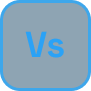

WICKED WIZARD
Wicked Wizard est un jeu vidéo de plateforme que j’ai réalisé seule en trois mois, lors de ma troisième session dans le cours d'intéractivité ludique. Développé avec le moteur de jeu Godot, il plonge le joueur dans l’univers d’une caverne moussue où il doit franchir les obstacles et récolter des pièces. Les ressources graphiques et sonores proviennent de créateurs indépendants et sont toutes créditées dans le fichier README de mon dépôt GitHub.
Au clavier, utilisez les flèches gauche et droite pour changer d’image après avoir atteint ce groupe avec la touche Tab.
Démarche du projet
Pour ce projet, mon point de départ était de créer un jeu de plateforme complet dans Godot, un moteur que je découvrais, avec pour objectif d’offrir une expérience fluide, lisible et agréable à jouer. J’ai d’abord défini l’ambiance d’une caverne moussue et mystérieuse, puis j’ai sélectionné des ressources graphiques et sonores cohérentes avec cet univers. J’ai ensuite programmé les déplacements et les sauts du personnage, conçu les niveaux, intégré la collecte de pièces, puis ajouté la musique, les effets sonores et le menu principal. Mon plus grand défi a été d’obtenir des mouvements précis et des collisions fiables ; en m’appuyant sur un tutoriel vidéo et de nombreux tests, j’ai ajusté la physique du personnage jusqu’à obtenir une jouabilité satisfaisante. Ce projet m’a permis de maîtriser les bases de Godot et d’apprendre à mener seule un projet de jeu, de l’idée à la version jouable.
Logiciels & technologies
-
Godot
Moteur de jeu & GDscript
-

VS Code
Code & développement front-end